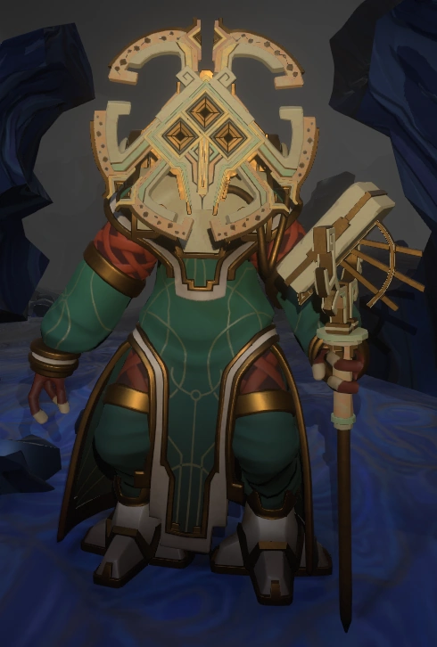
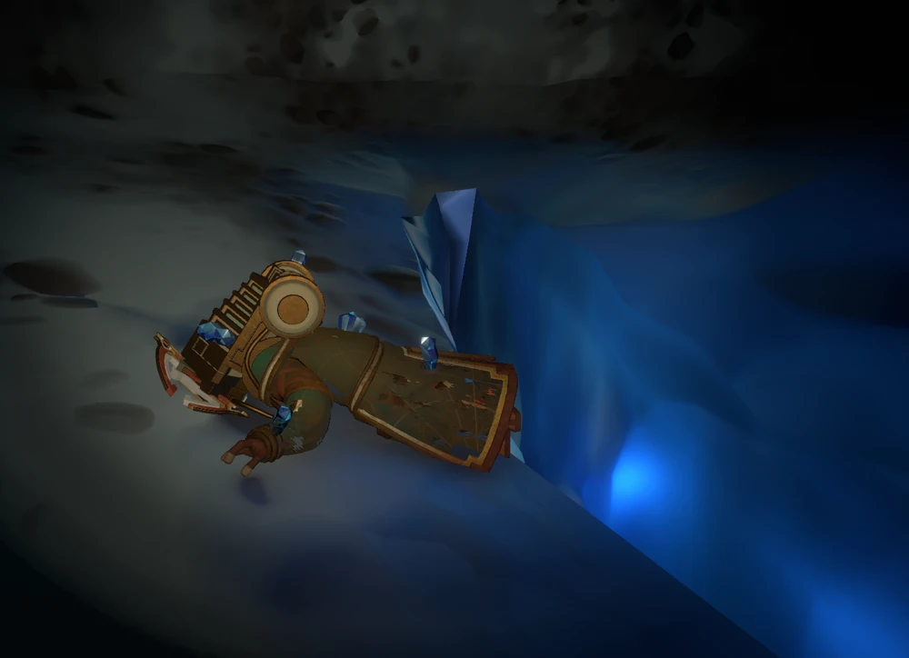
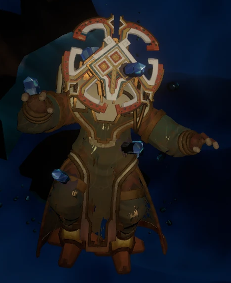
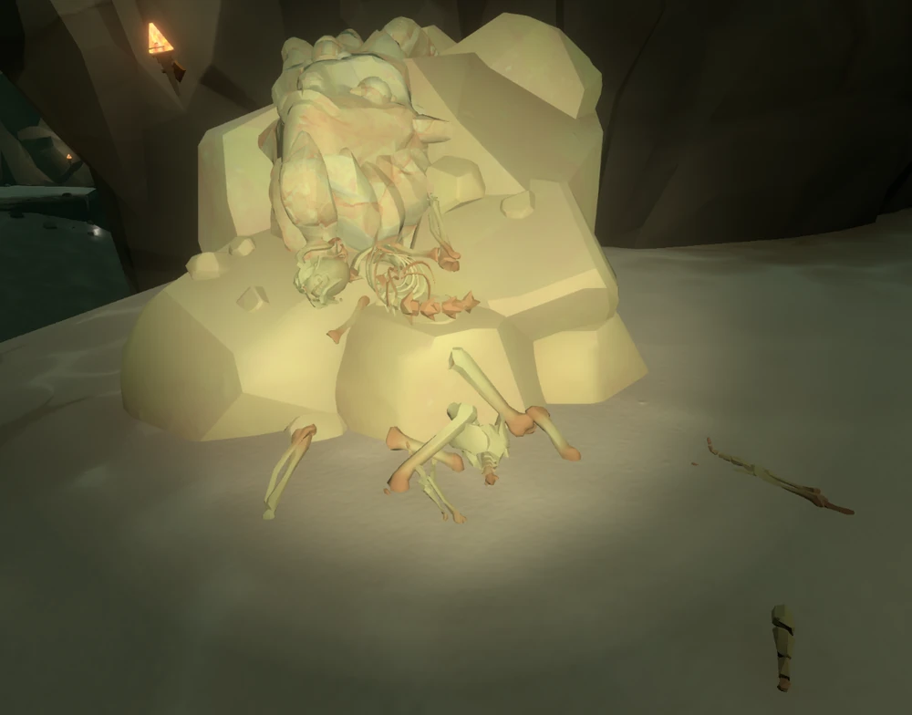

Nomai notables
Parmi les nombreuses traces laissées par les Nomai, certaines témoignent des accomplissements de personnages ayant marqué l'histoire de leur civilisation. Qu'il s'agisse de découvertes scientifiques ou de projets ambitieux, voici quelques-uns des Nomai dont les contributions ont joué un rôle important dans leur quête de connaissance.
Solanum - La pèlerine de la Lune Quantique

Solanum incarne parfaitement l'essence de la civilisation Nomai : une curiosité insatiable et une soif de connaissance. Comme beaucoup des siens, elle est fascinée par l'Œil de l'Univers, qu'elle considère comme une découverte fondamentale pour comprendre la nature même de l'univers. Son intérêt pour les phénomènes quantiques et son pèlerinage vers la Lune quantique illustrent cette quête de compréhension qui guide les Nomai depuis leur arrivée dans le système solaire.
Avens - L'audacieux lanceur de sondes
Avens participe à la construction du Lance-sonde orbital, un dispositif conçu pour envoyer une sonde à la recherche de l'Œil de l'Univers. Convaincu qu'une puissance de lancement maximale augmenterait les chances de le trouver, il souhaite pousser les limites du dispositif, au risque de provoquer sa désintégration lors du lancement. Le lance-sonde n'étant conçu que pour une seule tentative, sa destruction poserait un problème majeur : comment répéter le lancement et récupérer les informations obtenues? Une découverte de Poke permettra justement d'envisager une solution.
Poke - La restauratrice de la téléportation

Les Nomai avaient autrefois développé une technologie de distorsion leur permettant de parcourir de grandes distances à travers l'espace. Après leur arrivée dans le système solaire, ils ont toutefois dû réapprendre à maîtriser cette technologie. Poke contribue à la restaurer en recréant un noyau de distorsion reliant la Station du Trou Blanc vers la planète Cravité. C'est lors de ses travaux qu'elle découvre un phénomène inattendu : l'arrivée semble précéder le départ, créant un intervalle de temps négatif. Cette découverte ouvre la voie à de nouvelles possibilités et permet à Pye de prendre le relais pour étudier ce phénomène plus en profondeur.
Pye - La scientifique aux découvertes fatidiques
Pye étudie le phénomène découvert par Poke au Laboratoire des Hautes Énergies et confirme qu'il est possible de faire arriver de la matière avant son départ. Ses expériences démontrent qu'une augmentation de l'énergie permet d'accroître cet intervalle temporel, ouvrant théoriquement la possibilité de remonter jusqu'à 22 minutes dans le passé, soit le temps nécessaire à la sonde pour atteindre les confins du système solaire, où se trouve l'Œil de l'Univers. Ces découvertes constituent l'un des fondements scientifiques du Projet Sablière Noire et offrent une solution au problème du lance-sonde d'Avens : répéter ses lancements en envoyant une commande dans le passé. Mais encore faut-il pouvoir conserver les résultats de ces lancements successifs. C'est là qu'intervient Phlox.

Phlox - Le sculpteur de souvenirs

En collaboration avec Daz, Phlox participe à la création des statues mémorielles destinées au Projet Sablière Noire. Ces statues permettent d'enregistrer les souvenirs et de les transmettre aux masques du projet, afin de renvoyer les informations dans le passé. L'une d'elles est notamment reliée au module de suivi du Lance-sonde orbital d'Avens, permettant de conserver les données recueillies d'une boucle temporelle à l'autre.
DG · PB